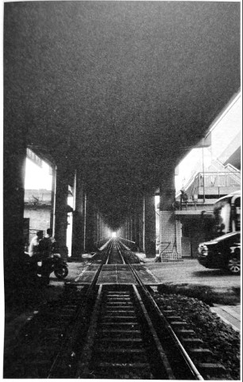

铁路桥：南方交通线上的痛点
衡阳铁路桥1横跨湘江，东岸为粤汉铁路，西岸为湘桂铁路，当时南方最重要的沟通南北和东西的两条铁路在此相交，它就是“肚脐眼”。
1944年6月23日，日军猛攻东岸飞机场，为防止日军利用此桥，第四军工兵营陆伯皋中校奉令炸毁此桥，而此桥因资金问题断断续续修了七年，此时通车才刚刚半年。
1944年6月24日，以铁路桥西岸据点为中心，衡阳保卫战，第十军以一万八千余人，捐躯七千四百人的代价，对抗十一万日军，至1944年8月8日，致敌死伤七万余人，击毙四万八千人。
很难想象，在断桥处阻击日军进攻的那一张张年轻的面孔，他们来自哪里？部队离散后，他们中好不容易活下来的，像蒲公英一样，又飘向哪儿了？
曾经蹲在桥头的人，现在，只找到杜学义和马如龙。他们所蹲守的断桥，13年后迎来了重生，原来被炸掉的桥墩得以修复，并扩修成公铁大桥，这是我国第二座公路铁路双用大桥，铁路桥亦改称湘公铁大桥2。2012年初，又扩修成衡州大道湘江大桥，全长2.62公里，其中跨越湘江的主桥493米。

2015年7月9日，衡阳铁路桥下，70年前发生在这里的战事已少有人知。
2009年重建的衡州大道跨湘江大桥。原位置抗战时期曾为衡阳铁路桥，1944年被炸受，1957年重修为衡湘公铁大桥。
1. 衡阳铁路桥1937年动工，翌年10月仅建好数个桥墩，就因资金不足停工。后由于要联通粤汉、湘桂两铁路，在其上游380米处修建便桥，但屡遭洪水，交通经常中断，最长的一次达五个月之久，又屡毁屡建。1942年12月又决定续修正桥，翌年8月开工，设计为公铁两用桥，但铁路和公路位于同一桥面。建桥本需60.2米的下承华伦式钢梁七孔，后由于广州被日军攻陷，只运到六孔，其余一孔滞留香港。只得修建成为一八孔桥，长427米，两岸均有公路引桥，总共耗资法币166.62万元，并于1943年底竣工，翌年元旦通车。 ↩
2. 衡湘公铁大桥1957年12月30日举行通车典礼。本桥下层铁路桥全长426.97米，上层公路桥全长643.15米。桥梁由7孔60.5米的下承桁梁组成，其中第1、2及第3、4孔为两跨连续梁，第5至7孔为三跨连续梁。下层为单线湘桂铁路，右侧有人行道。上层宽10米，有两车道公路，公路宽7米，两侧均有1.5米宽的人行道，两侧有引桥，东岸引桥长130.91米，西岸引桥长85.27米。共计浇筑混凝土5176立方米，安装钢梁2048吨，总投资510.1万元人民币。公铁大桥建成后，拆除便桥，如今在枯水季节仍能看到便桥桥墩。 ↩